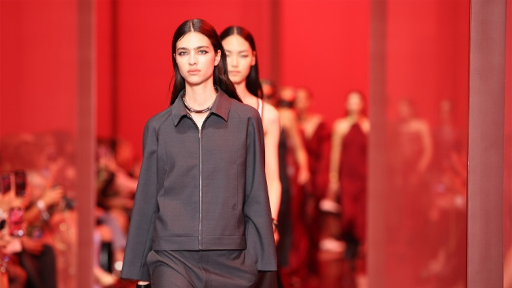

Bine ai venit!
Scopul acestui site este de informat cititorul despre ultimele tendințe de modă, ultimile noutăți de la designeri celebrii și de a prezenta cum sunt făcute unele haine, în principal de a educa și inspira.

Tendințe în modă
Află ce se poartă în acest sezon și cum să îți adaptezi garderoba.
- Imprimeuri de leopard
- Culori neutre
- Ținute oversized
Stiluri Vestimentare
Explorează diverse stiluri vestimentare, de la casual la elegant.
- Casual
- Streetwear
- Elegant
Întrebări frecvente
Ce înseamnă haute couture?
Haute couture este un termen francez care descrie creațiile de modă exclusiviste, realizate manual cu mare atenție la detalii.
Cum aleg ținuta potrivită pentru un eveniment?
Alegerea ținutei potrivite depinde de tipul evenimentului. De exemplu, pentru un eveniment formal, este recomandat un costum elegant sau o rochie de seară.
Istoria modei
Descoperă modalitățile care au fost folosite pentru a crea ținute unice și stilate.
"Moda e trecătoare, doar stilul rămâne neschimbat.- Coco Chanel"
Despre trecrea de la haute couture la moda stradală
Pentru început în industria modei, termenul haute couture se referă la articole vestimentare de lux, realizate manual și la comandă,iar moda stradală este acel stil ce combină funcționalitatea cu confortul, ceea ce face ca look-ul să fie original și impresionează prin forma sa simplă și relaxare.
În trecut, moda stradală era urâtă de designerii de topmoda stradală a început să
fie adoptată de designerii de top datorită individualismului pe care îl aduce..
Unele dintre cele mai cunoscute case de modă cunoscute pentru abordarea modei stradale includ
Dior și McQueen.
Individualitatea va fi întotdeauna una dintre condiţiile eleganţei adevărate.- Christian Dior
Întrebări frecvente
Cum se calculează prețul final al unui articol cu reducere?
Se calculează folosind o formulă matematică:
Prezentări de modă
Descoperă noile tendințe direct de pe podium
- Prezentări de modă
- Interviuri